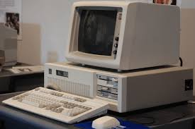
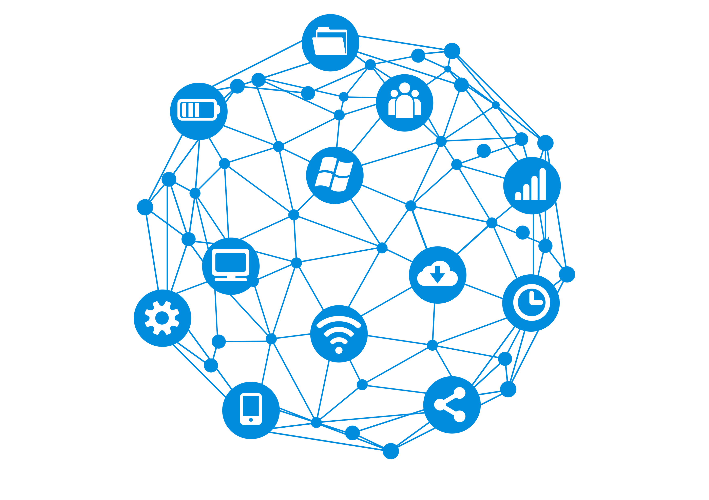

A história da internet começa no contexto da Guerra Fria, um período marcado pela disputa tecnológica entre grandes potências. Nesse cenário, surgiu a necessidade de desenvolver sistemas de comunicação mais seguros, capazes de funcionar mesmo em situações de conflito ou falhas.
Foi assim que teve início o surgimento da internet, com a criação da ARPANET, em 1969. Essa foi a primeira rede de computadores, criada para conectar universidades e centros de pesquisa, permitindo o compartilhamento de informações de forma mais rápida e eficiente.
Com o passar do tempo, houve uma grande evolução tecnológica. Foram desenvolvidos os protocolos TCP/IP, que padronizaram a comunicação entre computadores. Isso possibilitou a integração de várias redes diferentes, formando uma única rede global
Um marco importante aconteceu em 1983, quando a ARPANET adotou oficialmente o TCP/IP. Esse momento é considerado o início da internet moderna, pois permitiu sua expansão de forma mais organizada e eficiente.

A história dos computadores começou com máquinas muito grandes e lentas, que ocupavam salas inteiras e eramusadas apenas para cálculos científicos e militares.
Primeiros computadores (década de 1940–1950)
Os primeiros computadores eletrônicos, como o ENIAC, eram enormes, consumiam muita energia e tinham pouca capacidade de processamento. Eram usados principalmente por governos e universidades.
Segunda geração (1950–1960)
Com a invenção dos transistores, os computadores ficaram menores, mais rápidos e mais confiáveis. Ainda eram usados por grandes instituições.
Terceira geração (1960–1970)
Com os circuitos integrados, os computadores ficaram ainda mais compactos e eficientes, permitindo maior avanço no processamento de dados.
Quarta geração (1970–1980)
Surgiram os microprocessadores, que permitiram a criação dos primeiros computadores pessoais (PCs). Eles começaram a chegar em casas e empresas. Exemplos importantes são o Apple II e o IBM PC.
Década de 1990
Os computadores se popularizaram ainda mais com o avanço da internet e do sistema operacional Windows, tornando o uso mais simples e acessível para o público.
Anos 2000 até hoje
Os computadores se tornaram mais rápidos, leves e conectados. Surgiram notebooks, tablets e smartphones, integrando a computação ao dia a dia das pessoas. Hoje, eles são usados para trabalho, estudo, entretenimento e comunicação em tempo real.

A Internet começou a se desenvolver no Brasil durante a década de 1980, principalmente em universidades e centros de pesquisa. Nesse período, seu uso era bastante limitado e estava voltado para a comunicação e troca de informações entre instituições. Em 1989, foi criada a RNP (Rede Nacional de Ensino e Pesquisa), que teve um papel importante na conexão de universidades e instituições brasileiras. Na década de 1990, a Internet começou a se tornar acessível para um número maior de pessoas, com o surgimento dos provedores comerciais e a popularização dos computadores. No começo, era comum utilizar a Internet discada, que utilizava a linha telefônica e apresentava velocidades muito baixas. Com o passar dos anos, surgiram a banda larga, o Wi-Fi e as redes móveis, tornando o acesso cada vez mais rápido e presente no cotidiano dos brasileiros.
Hoje, a Internet está presente em praticamente todos os aspectos da vida cotidiana. Ela pode ser utilizada para estudar, trabalhar, conversar com outras pessoas, assistir a vídeos, ouvir músicas, jogar, fazer compras, acessar notícias e utilizar diversos serviços. Os smartphones também transformaram a maneira como as pessoas utilizam a Internet, permitindo que estejam conectadas em diferentes lugares. Além disso, tecnologias como redes sociais, computação em nuvem, streaming e inteligência artificial fazem parte da Internet moderna. Empresas, escolas, governos e outras instituições também utilizam a Internet para oferecer serviços e facilitar o acesso à informação. Dessa forma, a Internet deixou de ser apenas uma ferramenta de comunicação e passou a ser uma das principais tecnologias da sociedade atual.


A Internet do futuro deverá ser ainda mais rápida, inteligente e integrada ao nosso cotidiano. Novas tecnologias poderão mudar a maneira como as pessoas estudam, trabalham, se divertem e se comunicam. A inteligência artificial deverá ter um papel cada vez maior, ajudando em tarefas e serviços digitais. A Internet das Coisas (IoT) também poderá conectar cada vez mais objetos, como eletrodomésticos, carros, relógios e sistemas de segurança. Além disso, tecnologias de realidade virtual e realidade aumentada poderão criar novas formas de interação com ambientes digitais. As redes de comunicação também continuarão evoluindo, oferecendo conexões mais rápidas e estáveis. No futuro, a tendência é que a Internet esteja cada vez mais integrada às cidades, casas, veículos e dispositivos, tornando a conexão uma parte ainda mais importante da vida das pessoas.

© 2026 - Desenvolvido na aula de Web.